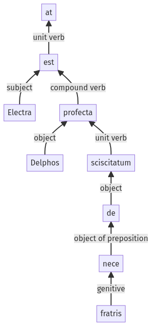

Hyginus, Fabulae, 122a.2.1-122a.2.9a
122a.1.20-122a.1.34a | 122a.2.10-122a.2.19a
Sentence 1205
122a.2.1-122a.2.9a
at Electra de fratris nece Delphos sciscitatum est profecta;
1 Electra
2 de fratris nece
1 Delphos
2 sciscitatum
1 est profecta
at Electra de fratris nece Delphos sciscitatum est profecta;
Highlighting:
- connecting words
- unit verb
- subject
- object
Color code:
- independent clause (level 1, intransitive verb)
- supine (level 2, transitive verb)
